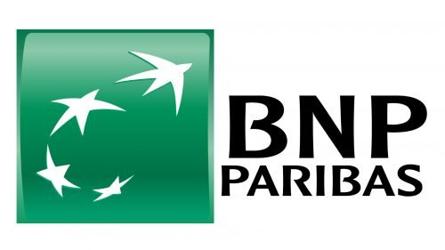
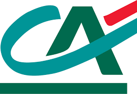

École hôpital de Londres
Avec l'Alternative Medical School Formez-vous a la medecine de demain
Hôpital de New York
voici l'une de nos école a New York
Logo
Vidéo
Chers Parents, Nous sommes ravis de vous présenter l'Alternative Medical School, une école visionnaire qui offre des formations uniques en lithothérapie, magnétisme, et vaudouisme. Sous la direction du Professeur Didier Raoult, nos programmes de licence et de master sont conçus pour élargir les horizons de votre enfant dans le domaine des sciences énergétiques et spirituelles.
Nos directeurs de formation, M. Diany pour les licences et Mme. Thouzeau pour les masters, sont des experts chevronnés dans ces domaines, garantissant la qualité de l'enseignement. Votre enfant aura l'opportunité d'explorer les mystères de la lithothérapie, du magnétisme et du vaudouisme, tout en développant ses compétences personnelles et spirituelles.
L'Alternative Medical School valorise l'épanouissement personnel, la créativité et la recherche de soi. Nous croyons que l'éducation ne se limite pas à l'acquisition de connaissances académiques, mais inclut également la découverte de la spiritualité. Rejoignez-nous pour offrir à votre enfant une éducation unique et enrichissante, ouvrant la voie à une transformation personnelle et spirituelle.
L'Alternative Medical School, en tant qu'école privée, offre à vos enfants un environnement d'apprentissage exceptionnellement dédié à leur épanouissement personnel et académique. Cette approche personnalisée leur permet de se développer pleinement, d'explorer leur créativité et de se préparer à un avenir prometteur.
En tant que sponsor, vous avez l'opportunité de soutenir une institution éducative unique qui transforme la vie de ses étudiants en les guidant vers une meilleure compréhension d'eux-mêmes, de leur environnement et du monde spirituel qui les entoure. Votre soutien contribuera à maintenir et à développer les programmes de qualité offerts par l'Alternative Medical School, permettant à un plus grand nombre d'étudiants de bénéficier de cette expérience exceptionnelle. Rejoignez-nous dans cette aventure inspirante et découvrez comment ensemble, nous pouvons faire la différence.
Sponsor:
 